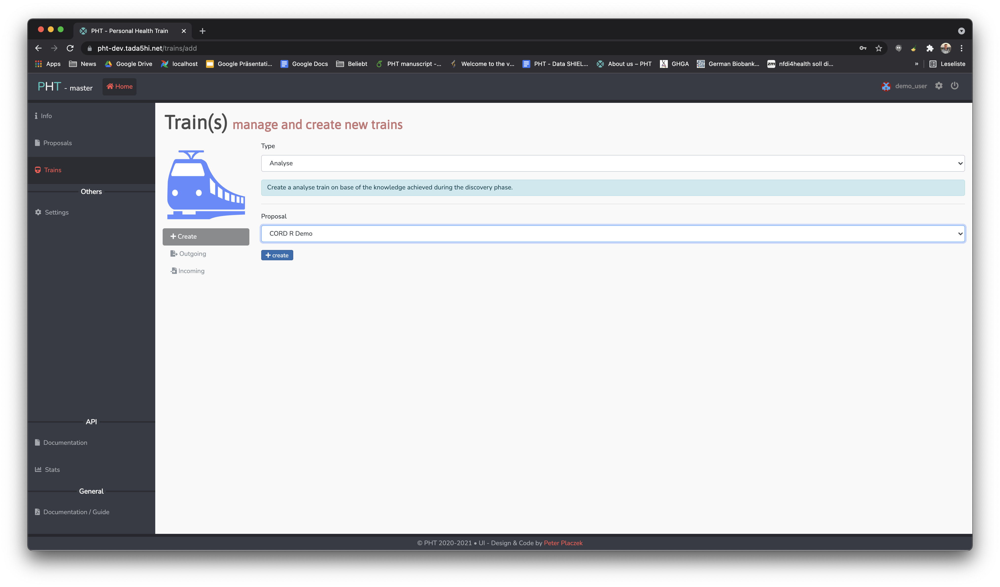
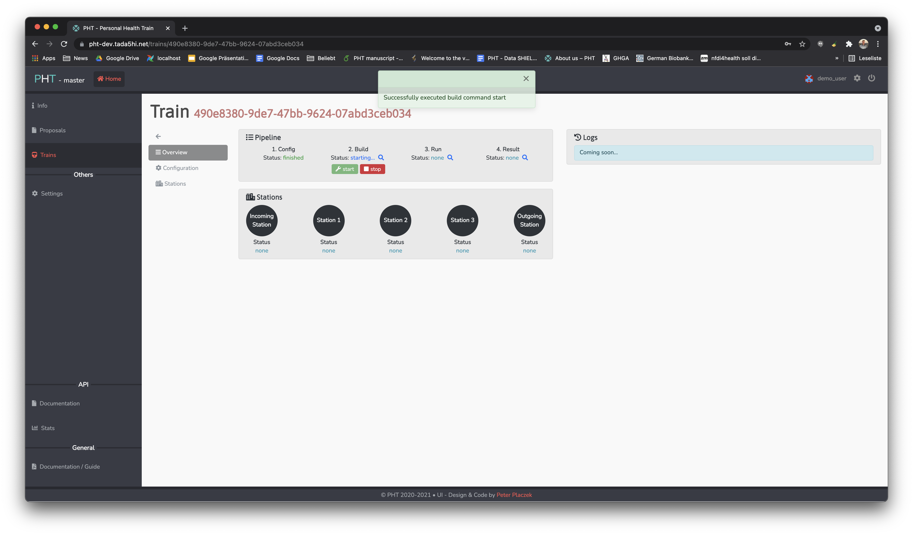
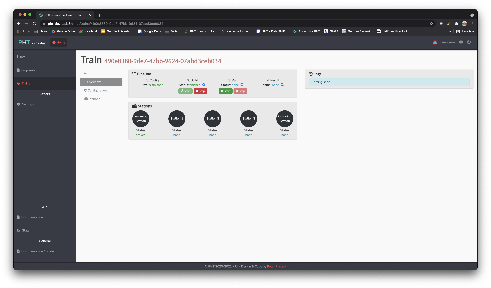
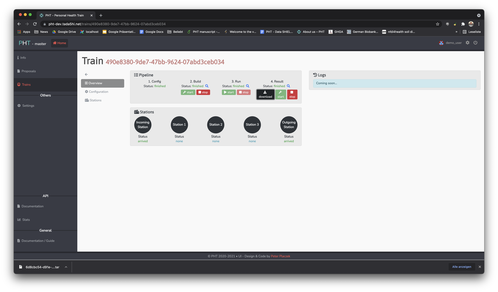
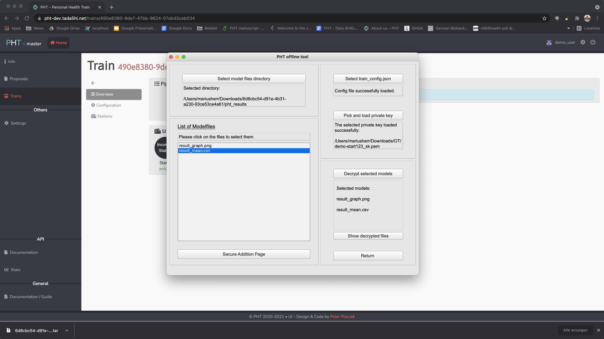

PHT CORD Demo
This section will provide explanations and examples for writing and executing CORD demo code and queries by using PHT meDIC. By using the demo account, we automatically accept and execute your analysis over three stations providing secure access to synthetic CORD demo data in FHIR.
Demo credentials for PHT demo: username demo_user and password cord_pht_demo.
With this user you can use all functionalities and
take a look at our admin area. Don't worry and play around, you cannot break something and the system resets itself.
Running CORD demo trains
We suggest to you to follow these steps:
- Download and install our Offline Tool.
- Load the private keys.
- Train submission:
- Define your FHIR query to be executed (see section below).
- Define your analysis (see section below).
- Submit your code (see section below).
- Run the train.
- Decrypt results.
Step 1 - Preliminaries
- Download and install the Offline Tool from our releases page.
- The demo user has predefined keys. Please download those.
- Login to our PHT demo page with username
demo_userand passwordcord_pht_demo.
Step 2 - Offline Tool and key loading
Get familiar with its functionalities. Additional information can be found in the offline tool documentation.
You need to download and use the keys in order
to decrypt the analysis results.
Go to the Security Values section of the tool and load the previous downloaded demo-start123_sk.pem private key.
You need to enter the password of the private key: start123.
Now you can continue with the train submission - you will need to sign
your submitted code and query with your private key.
Step 3 - Train submission
For this CORD PHT demo we recommend using or customizing an example train. Please clone this repository if you want to use our example trains.
Now you need to decide if you want to run a Python or R analysis. By writing the analysis code, you specify the data access, we recommend using FHIR.
Step 3.1 - FHIR queries
Our self implemented train-library not only includes security but also standardised FHIR query execution and access and currently supports the following servers: IBM, Hapi and Blaze. In this demo we use Blaze FHIR servers.
Read this section for details regarding FHIR queries: FHIR query documentation or continue with the train submission.
Step 3.2 - Write your analysis code
You can write your analysis code in any IDE. We suggest to use PyCharm for Python and RStudio for R code. The following examples will be executed at each station. Please get familiar with the following Python or R code:
R demo trains code is documented here: R CORD documentation
Python demo trains code is documented here: Python CORD documentation
Step 3.3 - Code submission
Upload your analysis code within the UI and select the entrypoint (script to be executed at stations if multiple files are submitted). The hash of the uploaded files and query needs to be signed by using the Offline Tool with your private key. The next steps guide you through the general submission process, exemplified by the submission of R demo train 2.
- Login to the UI
- Create a new train. Select the proposal based on your desired programming language.
- Keep the default Demo master image of the train unchanged, if you submit provided example code.
 -
Specify the stations to be executed at and select depending on your programming language the master image.

-
Upload the algorithm and select the entrypoint of the train.

- Specify the query

- Sign the hash with the local Offline Tool: Documentation

Step 4 - Train running
You need to build and run the train before you can download the results.
Start the building process of the train.

Please manually reload the page within the browser after 30-40 seconds.
Then you will be able to start the execution at the stations.

After a few minutes, results are available. Please reload the page manually again. A soon released feature will display the progress of the train in the Stations overview with a random station numbering. The user will also be able to see log files of the train.
Step 5 - result download and decryption
After a few minutes your train results can be downloaded. The files are automatically encrypted and need to be decrypted with the Offline Tool. Please follow these steps:
- Download results
 - Unzip the downloaded train results locally
- Result decryption:
- Start the Offline Tool
- Go to the "Model" section
- Load your private key
- Open the unzipped result directory "pht_results"
- Load the "train_config.json"-file of your train
- Select the files to decrypt (the selected ones appear in the box on the right)
- Decrypt the files by pressing the "Decrypt selected models" button

- View, process and store the results locally on your computer.
You can directly access them with the "Show decrypted files" button.

More information regarding result decryption can be read here. The decrypted files can be accessed from your explorer or finder locally.
FAQ
Train not updating
Question: My train is not updated in the UI, what can I do?
Answer Most likely your code or query has caused an error during execution. We work on extending this version to provide you with log files from the execution.
Is this the PHT?
Question: Is this the Personal Health Train?
Answer This is the implementation of the PHT from Tübingen University (PHT-meDIC). Many other versions exist.
Any difference in the demo?
Question: Is the PHT-meDIC as it would operate on real patient data?
Answer All services are interacting in this demo, as it would be on real data. But there is a major difference: any train will be approved and executed. There is no one to validate, if something malicious is ongoing. In case you saved all patient data as fake results in the train, you did not break the system nor hacked the architecture. We allowed you and automatically executed your train to do so.